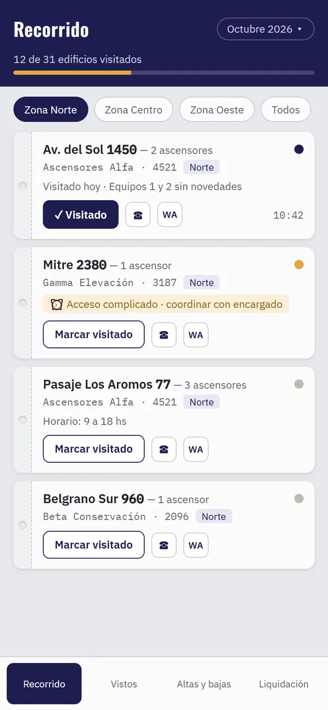
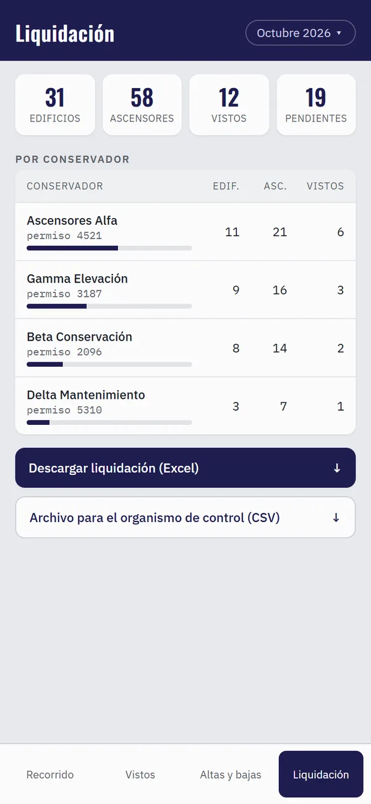
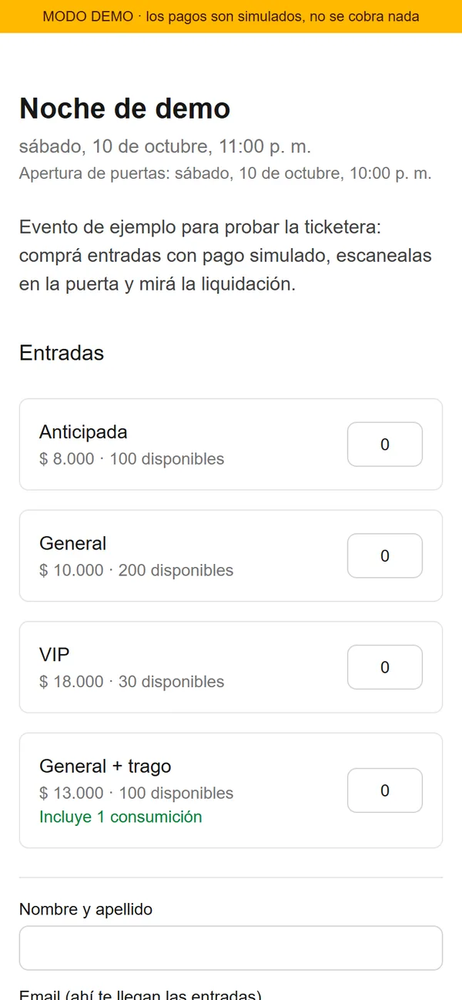
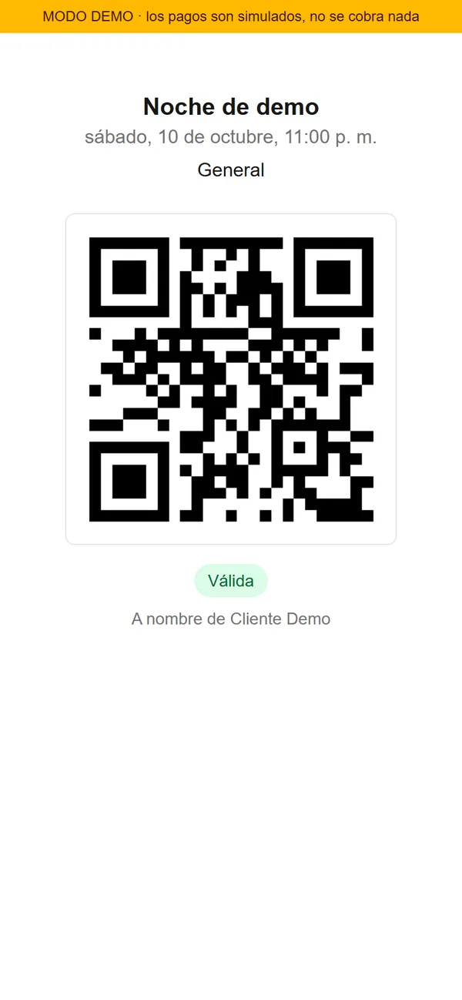
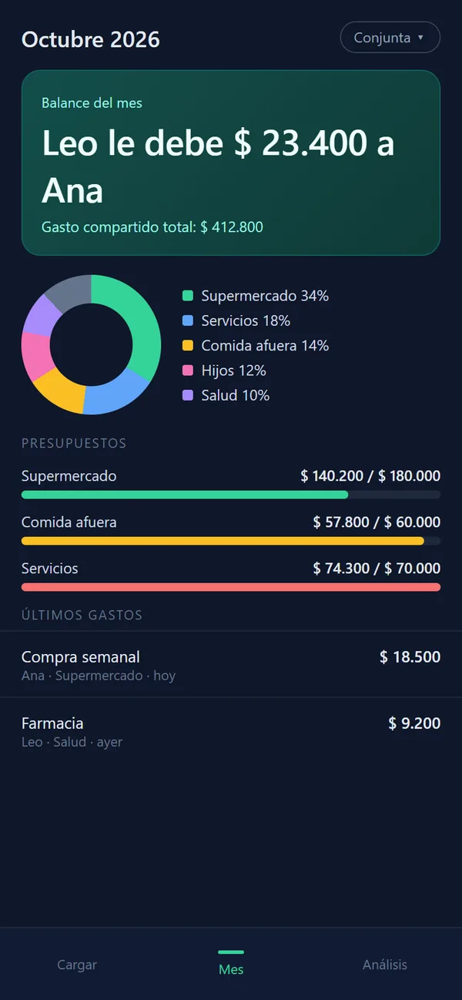

Inspecciones en campo
Recorrido del día, ficha de cada equipo, informe del mes y liquidación en Excel. Funciona sin señal.
Demos
Copias de trabajos reales con datos ficticios. Podés tocar todo: no hay clientes reales detrás.


Recorrido del día, ficha de cada equipo, informe del mes y liquidación en Excel. Funciona sin señal.


Página del evento, compra con pago simulado, entrada con QR y control en la puerta.


Cargás un gasto en segundos, se divide solo y cada uno ve su saldo del mes.
Herramientas